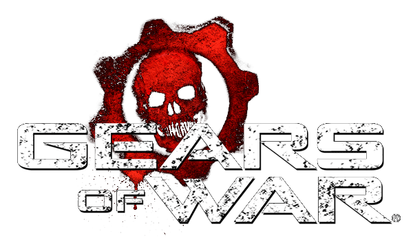
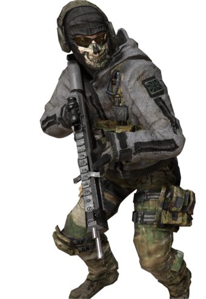
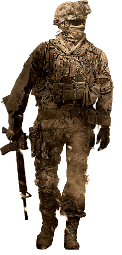
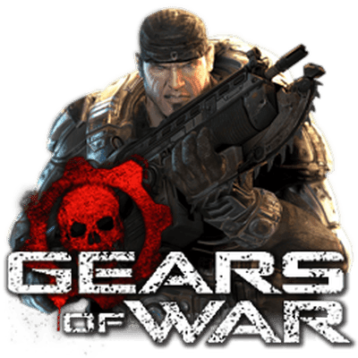
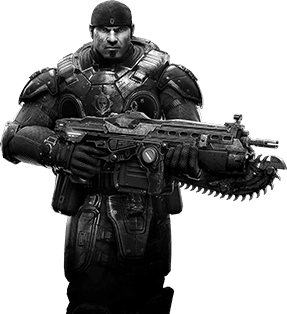
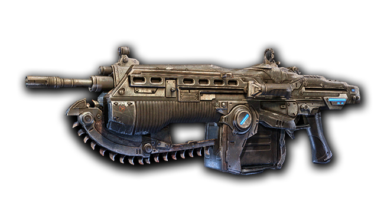

GUERRA
La industria del videojuego, que mueve más dinero que el cine y la música juntos, ha evolucionado hacia un entorno más maduro y con historias imbricadas que superan, en muchas ocasiones, la complejidad de los guiones cinematográficos de Hollywood. Secuencias espectaculares, giros inesperados, una gran profundidad de los personajes y tramas muy trabajadas se han podido ver en los últimos años, alejándose así del estigma que todavía arrastra esta forma de entretenimiento. Significado 
De igual manera que hiciera el cine o la literatura, la II Guerra Mundial ha inspirado numerosas propuestas. La imaginería colectiva se ha encargado de asentar mitos y elementos del mayor conflicto armado de la Historia. También el mundo del videojuego está plagado de obras en la que el desprecio por los nazis se ha visto reflejado en aventuras, algunas con un mayor latigazo de fidelidad histórica, en la que los jugadores han podido embarcarse en batallas que dejaron una factura imposible de olvidar: 75 millones de muertos entre civiles y militares. Clasificacion de Guerra 
Los videojuegos ambientados en la II Guerra Mundial experimentaron un «boom» en la primera década del milenio. Pese a todo, cada año aparecen títulos relacionados directa o indirectamente con batallas históricas entre Aliados y el Eje, y especialmente contra los nazis. En sus momentos más gloriosos, en torno al año 2005, se presentaron unas cincuenta propuestas coincidiendo con emblemáticas sagas como «Call of Duty» que tomaron el testigo de la emblemática «Medal of Honor». Pero todo tuvo un principio. Muchos de ellos han sido meras excusas mientras se deslizaban enemigos y armamento más moderno.. 
Un conflicto alternativo 
Uno de los primeros títulos que acudió a la II Guerra Mundial como contexto lúdico interactivo fue la saga «Wolfenstein». Pero a su forma. A lo largo de sus lanzamientos se ha intentado mantener su estilo y, por supuesto, su original planteamiento: relata una historia paralela en la que los nazis fueron los ganadores del conflicto. Violencia, disparos en primera persona y un mundo que cruza elementos vanguardistas compuesto por máquinas y armamento futurista se embarca en una aventura en la que el protagonista por antonomasia, BJ Blazkowicz, vive entre sugerencias mentales y reflexiones internas, a veces, es cierto, con mucho sentido del humor. Una de sus últimas entregas fue en 2019, «Wolfenstein: Youngblood», que recoge las peripecias de las dos hijas del protagonistas y estaba más centrado en un entorno multijugador online. En 2014, con la llegada de «Wolfenstein: The New Order», se avanzó en algunas mecánicas y un nivel gráfico más realista que ha continuado con algunas continuaciones como «The New Colossus. Juego de guerra de gran estrategia 
Los juegos de guerra de mesa son comúnmente categorizados de acuerdo a su escala de confrontación (juego de guerra de gran estrategia, juego de guerra estratégica, juego de guerra operacional, juego de guerra táctica o juego de guerra hombre a hombre). Los calificativos "tiempo real" y "por turnos" no son tenidos en cuenta ya que todos los juegos de mesa son, por necesidad, por turnos. Sin embargo, a veces los videojuegos de guerra son categorizados de acuerdo a su escala de conflicto. Company of Heroes 
También ha sido otra propuesta impregnada del atrayente mundo de las trincheras y los carros de combate. «Red Orchestra 2: Heroes of Stalingrad», por su parte, apostó en su momento por el realismo en el combate y el multijugador. Otros lanzamientos antiguos fueron «Silent Hunter III», basado en hechos históricos acaecidos en el Atlántico Norte, con lo que las batallas navales fueron su principal baza. Con la excusa de la Segunda Guerra Mundial, «The Saboteur» proponía una acción en tercera persona con Francia como principal localización, pero el resultado fue una verdadera tragedia, al contrario que «Brothers in Arms: Hells Highway», cuya recepción fue bastante buena. Realista y utilizando mapas originales de Normandía, el campo de batalla en esta aventura de acción táctica en primera persona trasladaba a los jugadores a una Holanda que intentaba recrear la Operación Market Garden, una de las operaciones más grandes de la historia, así como «Enemy Front», otro interesante juego de disparos en primera persona temático de esta guerra mundial aunque de jugabilidad más convencional.